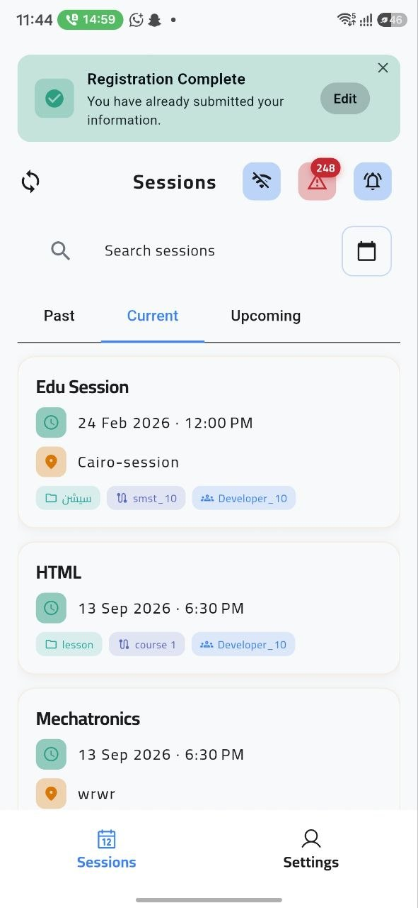
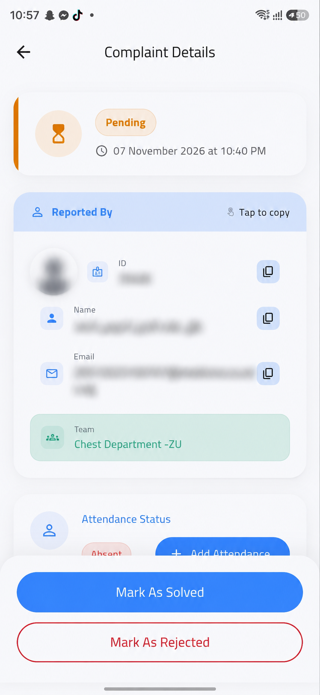

تفاصيل الجلسة القادمة في مكان واحد
تظهر بيانات المقرر، وموعد الجلسة، ومكانها أو رابطها، والطريقة المتاحة لتسجيل الحضور.
تجربة عضو هيئة التدريس • وقت أكبر للشرح
تظهر جلسات المحاضر من الجدول المعتمد، ويختار طريقة الرصد المناسبة، ثم يتابع البلاغات المرتبطة بجلساته من مكان واحد.
01 • تنظيم يوم المحاضر
بعد استيراد الجدول ومراجعته من المنسق، تظهر جلسات المحاضر مرتبة حسب اليوم والوقت والمكان، من دون إدخال بيانات الجلسة يدوياً.
تظهر بيانات المقرر، وموعد الجلسة، ومكانها أو رابطها، والطريقة المتاحة لتسجيل الحضور.
يستعرض المحاضر جلسات اليوم والغد، ويرجع إلى سجل الجلسات السابقة عند الحاجة.

02 • طرق تسجيل الحضور
في المدرج أو المعمل أو الجلسة الإلكترونية، يختار المحاضر الطريقة التي تناسب طبيعة الجلسة وتجهيزات الكلية.
يفتح المحاضر الجلسة ليسجل الطلاب الموجودون داخل نطاق القاعة حضورهم في وقت متزامن.
يسجل الطالب حضوره عبر NFC عند مدخل المعمل أو السكشن بحسب تجهيزات الكلية، فلا يُقتطع وقت من المحاضرة.
قائمة رقمية بأسماء الطلاب تساعد المحاضر على تسجيل أو مراجعة حالات محددة داخل الجلسة.
استيراد سجل حضور جلسة Microsoft Teams وإضافته إلى سجل المقرر بدلاً من تفريغ الأسماء يدوياً.
خيار للحالات الاستثنائية، مثل مشكلة تقنية أو عدم توفر هاتف الطالب، مع تسجيل سبب الإضافة.
القائمة الإلكترونية هي قائمة الجلسة نفسها للتحقق أو تسجيل حالات محددة؛ أما الإضافة اليدوية فهي مسار استثنائي موثق عند تعذر وسيلة الرصد، مع توضيح السبب. ومهما اختلفت الطريقة، تُحفظ النتيجة في سجل واحد مرتبط بالجلسة.
03 • دورة البلاغات في مسار واحد
تُراجع بلاغات الحضور بواسطة المنسق الأكاديمي أو محاضر الجلسة، وفق آلية العمل والصلاحيات الحالية المعتمدة في الكلية.
يظهر البلاغ باسم الطالب وتاريخ الجلسة وسبب الطلب.
يراجع الطرف المختص توضيح الطالب وما أرفقه من مستندات إن وُجدت.
يُقبل تعديل الحضور أو يُرفض الطلب مع توضيح السبب، ويُحفظ القرار في سجل البلاغ.
يظهر قرار القبول أو الرفض للطالب، وتتحدث بيانات الجلسة في السجل.

أسئلة أعضاء هيئة التدريس
تفاصيل تهم المحاضرين والهيئة المعاونة عند استخدام المنظومة في المدرجات والسكاشن.
تكامل المنظومة
ما يسجله المحاضر في الجلسة يظهر في مسار متابعة الطالب والمنسق، ثم يدخل في مراجعة التقارير.
شاهد تسلسل العمل من الجدول حتى مراجعة البيانات والتقارير.
تنظيم الجلسات، طرق الرصد الخمس، والرد على البلاغات المرتبطة بها.
كيف يرى الطالب جدوله ويسجل حضوره ويتابع نسب الغياب والإنذارات.
استيراد الجداول، متابعة التسجيلات والبلاغات، واستخراج التقارير.
اطلب عرضاً عملياً يوضح اختيار طريقة الرصد المناسبة لمدرجات ومعامل كليتكم.